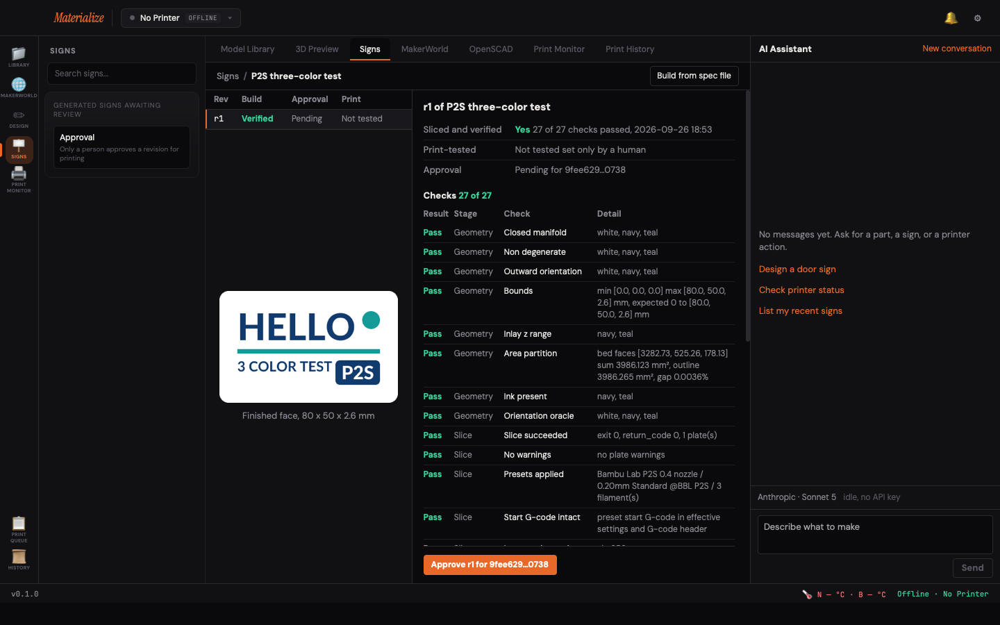

A Mac app for Bambu Lab P2S owners. Tell the chat what sign you want; the app builds a three-color model, slices it with Bambu Studio, runs 27 checks, and waits for you to approve before you export a 3MF.
Download for Mac (Apple Silicon)